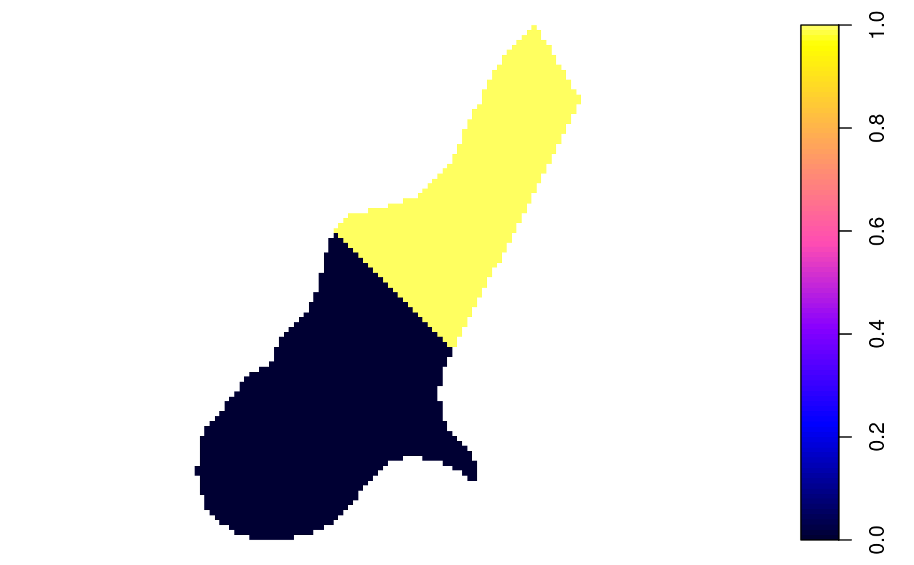

gridded-methods.Rdreturns logical (TRUE or FALSE) telling whether the object is gridded or not; in assignment promotes a non-gridded structure to a gridded one, or demotes a gridded structure back to a non-structured one.
gridded(obj) gridded(obj) <- value fullgrid(obj) fullgrid(obj) <- value gridparameters(obj)
| obj | object deriving from class "Spatial" (for gridded), or object of class SpatialGridDataFrame-class (for fullgrid and gridparameters) |
|---|---|
| value | logical replacement values, TRUE or FALSE |
object deriving from class "Spatial"
if obj derives from class Spatial, gridded(object) will tell whether it is has topology on a regular grid; if assigned TRUE, if the object derives from SpatialPoints and has gridded topology, grid topology will be added to object, and the class of the object will be promoted to SpatialGrid-class or SpatialGridDataFrame-class
fullgrid returns a logical, telling whether the grid is full
and ordered (i.e., in full matrix form), or whether it is not full
or unordered (i.e. a list of points that happen to lie on a grid. If
assigned, the way the points are stored may be changed. Changing a set
of points to full matrix form and back may change the original order of
the points, and will remove duplicate points if they were present.
gridparameters returns, if obj inherits from
SpatialGridDataFrame its grid parameters, else it returns numeric(0). The
returned value is a data.frame with three columns, named cellcentre.offset
("lower left cell centre coordinates"), cellsize, and cells.dim (cell
dimension); the rows correspond to the spatial dimensions.
# just 9 points on a grid: x <- c(1,1,1,2,2,2,3,3,3) y <- c(1,2,3,1,2,3,1,2,3) xy <- cbind(x,y) S <- SpatialPoints(xy) class(S)#> [1] "SpatialPoints" #> attr(,"package") #> [1] "sp"plot(S)gridded(S) <- TRUE gridded(S)#> [1] TRUEclass(S)#> [1] "SpatialPixels" #> attr(,"package") #> [1] "sp"summary(S)#> Object of class SpatialPixels #> Coordinates: #> min max #> x 0.5 3.5 #> y 0.5 3.5 #> Is projected: NA #> proj4string : [NA] #> Number of points: 9 #> Grid attributes: #> cellcentre.offset cellsize cells.dim #> x 1 1 3 #> y 1 1 3plot(S)gridded(S) <- FALSE gridded(S)#> [1] FALSEclass(S)#> [1] "SpatialPoints" #> attr(,"package") #> [1] "sp"# data.frame data(meuse.grid) coordinates(meuse.grid) <- ~x+y gridded(meuse.grid) <- TRUE plot(meuse.grid) # not much goodsummary(meuse.grid)#> Object of class SpatialPixelsDataFrame #> Coordinates: #> min max #> x 178440 181560 #> y 329600 333760 #> Is projected: NA #> proj4string : [NA] #> Number of points: 3103 #> Grid attributes: #> cellcentre.offset cellsize cells.dim #> x 178460 40 78 #> y 329620 40 104 #> Data attributes: #> part.a part.b dist soil ffreq #> Min. :0.0000 Min. :0.0000 Min. :0.0000 1:1665 1: 779 #> 1st Qu.:0.0000 1st Qu.:0.0000 1st Qu.:0.1193 2:1084 2:1335 #> Median :0.0000 Median :1.0000 Median :0.2715 3: 354 3: 989 #> Mean :0.3986 Mean :0.6014 Mean :0.2971 #> 3rd Qu.:1.0000 3rd Qu.:1.0000 3rd Qu.:0.4402 #> Max. :1.0000 Max. :1.0000 Max. :0.9926